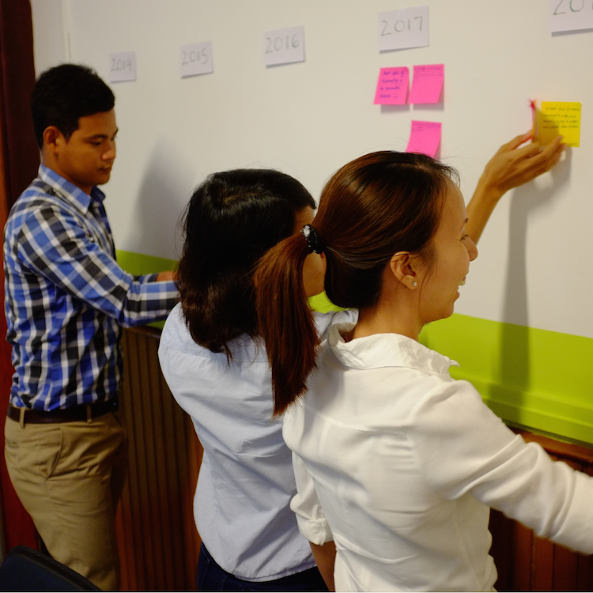
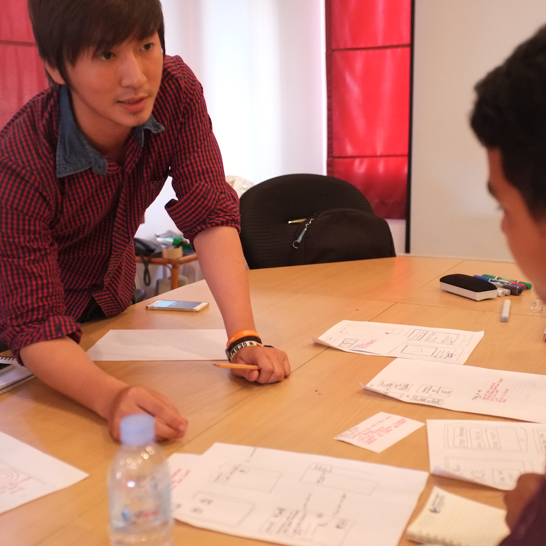
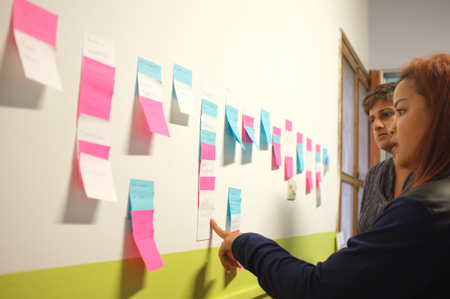

Brainstorm New Solutions
There are many exercises that you can do to help you create ideas that you can leverage for your app. Below are a selection of tools that we used. A thorough list of ideation tools and exercises are on the Create Tools page.
Future Mapping
The purpose of this exercise is to think through and understand where you and your users have culturally, politically, and socially been in the recent past, present and future. In the workshop, participants map key trends from the past year, the current year, and three years ahead. They then review the map, identify patterns, and discuss the relevance of different trends. It is useful for supporting discussion and debate around high-level themes: society, technology, politics, etc.
Step 1 of 6
Before the workshop make sure that you have a long empty wall with the area in front of it cleared. Divide the wall roughly into three equal sections with tape.
On three sheets of paper, write with a thick marker last year, this year, and next year to three years in the future: e.g. 2014, 2015, 2016, 2017, 2018.
Stick the years up, one at the top of each section, in chronological order.
Step 2 of 6
Give each participant a marker and post-its.
Bring the group to stand together facing the wall. Explain the purpose of the workshop and give them the following instructions:
We will, as a group, co-create a vision of the future through the lens of the past and the present.
As individuals you will write a significant “thing” (trend, technology, political movement, behavioral shift, etc.) on a post-it: one per post-it. Then you’ll walk up to the wall and and stick it up, reading your post-it out loud so the rest of the group can hear.
There’s no need to wait your turn. As soon as you have one, write it down and stick it up.
We’re aiming to fill the wall in the next 15 minutes.
Step 3 of 6
Start with last year, give them 5 minutes to fill the space with post-its, then move to this year, and then to the 5 years in the future.
Support the group to keep the pace up and encourage everyone to participate. If you feel the speed is dragging, ask relevant questions or make suggestions to inspire the group.
Step 4 of 6
When the time is up keep the group in front of the wall. Ask them to look at the post-its on the wall and look for patterns and common themes in each year. If time allows, create subgroups to sort the trends under each year and prepare a summary of the key patterns.
Step 5 of 6
Run a group reflection and discussion. Some good prompt questions are:
- How was that exercise?
- What have I learned?
- How do I feel about the past, present, and future?
- What does this mean for us? For women? For our country?
- Encourage participants to speak from their personal experience, using “I” rather than “us” and “we”.
Step 6 of 6
Take a piece of paper and write up one theme on each piece of paper that the group has found, and tape it to the wall. Start to move the post-it notes under each theme. Wrap up the session by sharing some of the key themes that you heard throughout the discussion. Ask the group how they would like to capture their thoughts and actions to use in the future.
Idea & Concept Development
Ideation and Concept Development is a process for groups to work collaboratively to generate creative ideas. It’s a general approach that can be adapted and customized to address many issues around ending violence against women. It includes basic principles for idea generation and several steps for groups to work with. It also includes steps for idea selection and development.
Step 1 of 8
Gather a team of people that you plan to design and build the app with, along with any other key stakeholders that you want to include in the ideation of the app. Introduce the purpose of the ideation activity, in which the desired outcome is tangible new ideas to solve the issues around violence against women. In any case: begin with an introduction, setting the context.
Step 2 of 8
Introduce the below ideation principles for effective ideation. These are simple guidelines to support creativity.
Yes, and… Build on the ideas of others by saying yes! and adding onto their ideas. Listen actively for opportunities to build and elaborate.
More is more In the first stage, it’s all about quantity. Focus on getting down as many ideas as possible rather than striving to come up with really “good” ideas. Get it all out.
Postpone judgment Suspend your inner critic and resist the urge to evaluate the ideas as they flow out. Anything goes and the time for judgement is later.
Team is everything Make full use of all brains by ensuring that every team member is included. Create space for everyone to contribute their ideas.
Step 3 of 8
The key question: Next, introduce the question that your team will ideate around. In some settings, the group may come up with their own question. In other settings, the facilitator should propose a main question that everyone works on. “The key question” should be an open, clear and engaging one that seeks a solution to a compelling problem or need.
Step 4 of 8
Ideation Tools: With the question or questions clear, have the team begin ideating around the question. Introduce one or several ideation methods to support this step.
Association: Using random words or random images, ideate in teams using association. Pull a random word or image and generate ideas for two minutes around it. Then pull a new one and go again.
Negative Brainstorming: Flip the key question to its negative form and ideate around that. For example, how could Hyper Island create the world’s worst Toolbox? After brainstorming the negative ideas, explore what happens when they are inverted.
User Perspective: Explore the focus question from the perspective of specific users. What would it look like for a farmer in Battambang? For your grandmother? For a 20 year-old beer promoter? Etc.
Mash-up: Use the “Mash-up approach” by brainstorming a cluster of technologies and a cluster of things related to your focus question. Then, mix-and-match different elements and see what emerges.
Step 5 of 8
Ideate! Give the team a set amount of time to ideate using one or more of the tools introduced. There should be sufficient time to allow some flow to develop, but short enough that everyone feels some pressure.
Step 6 of 8
Cluster & Narrow After the ideation phase, have teams cluster and organize their ideas. This involves grouping common themes and similar ideas. They should remove duplicates and give each cluster a title.
Step 7 of 8
Selection Once teams have clustered and organized their ideas, have them select one or several ideas to move forward with. Provide a set of selection criteria or have teams generate their own criteria. For example: ideas should be selected based on the three criteria of relevance, feasibility and newsworthiness. With criteria set, one rapid method for selection is to use Dotmocracy, in which each participant has a certain number of dots to assign to the ideas on the table. The ideas with the most dots then have the most collective endorsement from the group.
Step 8 of 8
Develop it! The final step is to further develop the most promising idea identified in the above step. Here, participants develop the ideas further, exploring the details of the concept, functionality, feasibility, business model, etc. This can be done within the same session, or could be done in a longer session of its own.
Mash-Up Innovation
This final exercise will help you take the learnings from the first two exercises and start creating tangible app ideas to build out. Mash-ups is a collaborative idea generation method in which participants come up with innovative concepts by combining different elements together. In a first step, participants brainstorm around different areas, such as technologies, human needs, and existing services. In a second step, they rapidly combine elements from those areas to create new, fun and innovative concepts. Mash-ups demonstrates how fast and easy it can be to come up with innovative ideas.
Step 1 of 3
First brainstorm: Ask the whole group to brainstorm around the areas of:
- TECHNOLOGIES (e.g. telephone, 3D printing, GPS),
- HUMAN NEEDS (e.g. love, transportation, waking up in the morning), and
- EXISTING SERVICES (e.g. Google translate, Spotify, Candy Crush).
Spend 3 minutes brainstorming around each area. Have participants write one idea per post-it. Make the brainstorm active and fast-paced. Have participants call-out each idea as they place it up on the wall. By the end of the brainstorming there should be three large clusters of post-its on the wall, one for each area. The more the better!
Step 2 of 3
Mashups: Explain that they will have 12 minutes to come up with as many mash-up concepts as they can.
A mash-up concept consists of 2 or more elements from the wall combined together to create a new concept.
For each mash-up that a team creates, they must give the concept a catchy name and capture it on a piece of paper. The paper should include: the elements that combine to make the new concept (e.g. iPads + Doing Laundry + Paypal) and the name of the concept (eg. Launderfy).
Step 3 of 3
Develop: A final optional step is to have participants choose their favorite and/or most feasible mash-up concept and develop it further for 30 minutes, exploring the details of the concept and its functionality. Each team uses one flipchart paper to visualize the concept.